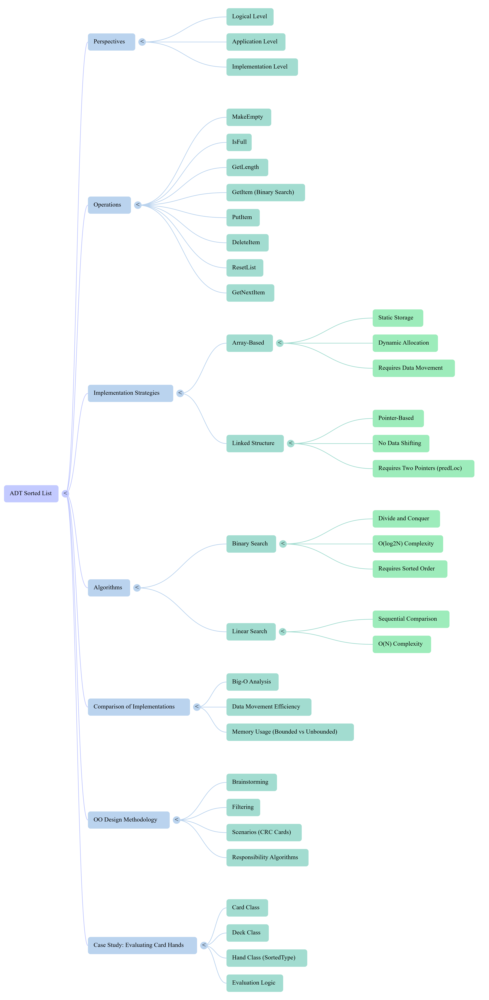

Xinxing Wu
<p class='titlep'> </p> # ADT Sorted List <hr> <br> Xinxing Wu
# Outline [<p class="hover-underline-animation">Sorted List ADT basics</p>](#/ch1) [<p class="hover-underline-animation">GetItem improvements + Binary Search + Big-$\mathcal{O}$</p>](#/ch2)
# Outline [<p class="hover-underline-animation">Linked implementation + comparisons + bounded/unbounded + OO methodology</p>](#/ch3) [<p class="hover-underline-animation">Summary</p>](#/ch4) [<p class="hover-underline-animation">Application</p>](#/ch5)
## Goal <div id="shadebox-neon" class="shadebox neon"> Understand + implement a <spanBYMix>Sorted</spanBYMix> List ADT (array + linked), searching, Big-$\mathcal{O}$, and OO design steps. </div>
<p class="definition-rainbow-title">Sorted List ADT basics</p>
<div class="definition-pro-Y-container"> <div class="definition-pro-Y-title">Sorted List ADT basics</div> <div class="definition-pro-Y-shadebox"> <div style="width: 800px;"></div> What is a Sorted List ADT? <div id=roundbox> Operations + array-based Put/Delete </div> </div> </div> <div class="question-container"> <div class="question-title">What is a “List”</div> <div class="question-shadebox"> <div style="width: 800px;"></div> A **list** is a linear sequence of items: - You can access items <spanGREEN>in order</spanGREEN> (first, second, third…) - From an item (except the last), you can access the **next** item </div> </div> <div class="question-container"> <div class="question-title">What makes it a <spanBYMix>Sorted</spanBYMix> List?</div> <div class="question-shadebox"> <div style="width: 800px;"></div> A **Sorted List** keeps items ordered by a **key**. Example (sorted by name): <hr style="border: none; border-top: 2px dashed green;"> ``` [ "Amy", "Becca", "Chris", "Judy", "Sue" ] ``` </div> </div> - If we <spanGREEN>insert a new item</spanGREEN>, we must put it <spanRED>in the correct position</spanRED> so the list stays sorted. <div class="question-container"> <div class="question-title">3 perspectives</div> <div class="question-shadebox"> <div style="width: 800px;"></div> - **Application level:** how a user/client uses it (what problems it solves) - **Logical level:** what operations exist + rules (pre/postconditions) - **Implementation level:** how it is stored (array, linked nodes, etc.) </div> </div> <div class="question-container"> <div class="question-title">Common operations (interface)</div> <div class="question-shadebox"> <div style="width: 800px;"></div> Sorted List ADT: common operations (interface). Typical operations in this chapter: - `MakeEmpty()` - `IsFull()` - `GetLength()` - `PutItem(item)` </div> </div> <div class="question-container"> <div class="question-title">Common operations (interface)</div> <div class="question-shadebox"> <div style="width: 800px;"></div> - `DeleteItem(item)` - `GetItem(item, found)` (retrieve by key) - `ResetList()` - `GetNextItem()` </div> </div> <div class="question-container"> <div class="question-title">What changes vs Unsorted List?</div> <div class="question-shadebox"> <div style="width: 800px;"></div> Functions don’t change state, but **sorted order matters** for: - `PutItem` (must keep list sorted) - `DeleteItem` (uses key + assumes exactly one match) - `GetItem` (can be <spanBYMix>improved</spanBYMix> because data is sorted) </div> </div> <div class="question-container"> <div class="question-title">Preconditions</div> <div class="question-shadebox"> <div style="width: 800px;"></div> When a function says “Preconditions”, it means: > “What must be true BEFORE you call it.” Examples: - `PutItem(item)`: list must be <spanBYMix>initialized</spanBYMix>, <spanRED>not full</spanRED>, and item <spanRED>not</spanRED> already inside; list is <spanGREEN>sorted</spanGREEN>. - `DeleteItem(item)`: item’s key must be set; list sorted; exactly one matching item exists. </div> </div> <div class="question-container"> <div class="question-title">Data we store (array-based idea)</div> <div class="question-shadebox"> <div style="width: 800px;"></div> We usually store: - `info[]` : array of items - `length` : how many items currently in list - `maxList` : capacity (max size) - `currentPos` : for iteration (`ResetList` + `GetNextItem`) </div> </div> <div class="question-container"> <div class="question-title">ItemType</div> <div class="question-shadebox"> <div style="width: 800px;"></div> In the textbook style, items have a `ComparedTo()` that returns: - `LESS`, `GREATER`, or `EQUAL` Here is a minimal C++ version: ```cpp enum RelationType { LESS, GREATER, EQUAL }; struct ItemType { int key; // the thing we sort by RelationType ComparedTo(const ItemType& other) const { if (key < other.key) return LESS; if (key > other.key) return GREATER; return EQUAL; } }; ``` </div> </div> > How To insert a new element into a sorted array list <div class="question-container"> <div class="question-title">Array-based PutItem</div> <div class="question-shadebox"> <div style="width: 800px;"></div> To insert into a sorted array list: - Find where it belongs (first spot where item < info[i]) - Shift items down to make space - Put the item there - length++ </div> </div> <div class="question-container"> <div class="question-title">PutItem example</div> <div class="question-shadebox"> <div style="width: 800px;"></div> Start (sorted): ``` index: 0 1 2 3 [10, 20, 40, 50] length=4 ``` Insert 30: - belongs between 20 and 40 - shift 40 and 50 right Result: <hr style="border: none; border-top: 2px dashed green;"> ``` [10, 20, 30, 40, 50] length=5 ``` </div> </div> <div class="question-container"> <div class="question-title">PutItem pseudocode</div> <div class="question-shadebox"> <div style="width: 800px;"></div> ``` location = 0 while location < length AND item > info[location]: location++ for index = length down to location+1: info[index] = info[index-1] info[location] = item length++ ``` </div> </div> <div class="question-container"> <div class="question-title">PutItem C++</div> <div class="question-shadebox"> <div style="width: 800px;"></div> ``` class SortedIntList { private: static const int MAX = 100; int info[MAX]; int length; public: SortedIntList() : length(0) {} bool isFull() const { return length == MAX; } int getLength() const { return length; } void putItem(int item) { if (isFull()) return; // for class demo; in real code throw/handle int location = 0; while (location < length && info[location] < item) { location++; } for (int i = length; i > location; i--) { info[i] = info[i - 1]; } info[location] = item; length++; } }; ``` </div> </div> <div class="question-container"> <div class="question-title">insert at beginning / end</div> <div class="question-shadebox"> <div style="width: 800px;"></div> - Insert smaller than everything: location = 0, shift all right → works. - Insert larger than everything: loop ends with location = length, shift loop does nothing → append → works. </div> </div> <div class="question-container"> <div class="question-title">Array-based DeleteItem</div> <div class="question-shadebox"> <div style="width: 800px;"></div> To delete from a sorted array list: - Find the matching key - Shift items up/left to fill the gap - length-- </div> </div> <div class="question-container"> <div class="question-title">DeleteItem example</div> <div class="question-shadebox"> <div style="width: 800px;"></div> Start ``` [10, 20, 30, 40, 50] ``` <hr style="border: none; border-top: 2px dashed green;"> Delete 30: - find index 2 - move 40 → index 2, 50 → index 3 Result: ``` [10, 20, 40, 50] ``` </div> </div> <div class="question-container"> <div class="question-title">DeleteItem C++</div> <div class="question-shadebox"> <div style="width: 800px;"></div> ``` void deleteItem(int item) { // assume item exists exactly once (like the chapter’s precondition) int location = 0; while (location < length && info[location] != item) { location++; } if (location == length) return; // not found (extra safety) for (int i = location + 1; i < length; i++) { info[i - 1] = info[i]; } length--; } ``` </div> </div> <div class="question-container"> <div class="question-title">Iteration helpers</div> <div class="question-shadebox"> <div style="width: 800px;"></div> Iteration helpers: ResetList + GetNextItem Why these exist: - They let you “walk” through the list one item at a time. Array-style typical idea: - ResetList() sets currentPos = -1 - GetNextItem() does currentPos++ then returns info[currentPos] </div> </div> <div class="question-container"> <div class="question-title">iteration (array)</div> <div class="question-shadebox"> <div style="width: 800px;"></div> ``` class SortedIntList { // ... same as before ... int currentPos; public: SortedIntList() : length(0), currentPos(-1) {} void resetList() { currentPos = -1; } int getNextItem() { currentPos++; return info[currentPos]; } }; ``` </div> </div> <div class="definition-com-container"> <div class="definition-com-title">Question</div> <div class="definition-com-shadebox"> <div style="width: 800px;"></div> Start with an empty sorted list. Insert these in order: 40, 10, 50, 20, 30 Question: - After EACH insertion, what does the array look like? <button type="button" class="reveal-btn" data-answer="answer-q1">Show Answer</button> <div id="answer-q1" class="answer-box"> <b>Answer:</b> Insert 40 → [40] Insert 10 → [10,40] Insert 50 → [10,40,50] Insert 20 → [10,20,40,50] Insert 30 → [10,20,30,40,50] </div> </div> </div>
<p class="definition-rainbow-title">GetItem improvements + Binary Search + Big-$\mathcal{O}$</p>
> GetItem in a sorted list: why it can be faster <div class="question-container"> <div class="question-title">GetItem in a sorted list:</div> <div class="question-shadebox"> <div style="width: 800px;"></div> GetItem in a sorted list: why it can be <spanBYMix>faster</spanBYMix> If list is sorted, and you are <spanGREEN>scanning left-to-right</spanGREEN>: - When you reach a value bigger than your target, you can <spanRED>STOP</spanRED> early (target cannot appear later). <hr style="border:0;height:6px;border-radius:999px;background:linear-gradient(90deg,#ff3b3b,#ffb13b,#fff23b,#3bff8f,#3bc8ff,#8a3bff,#ff3b3b);background-size:300% 100%;animation:rainbowLine 4s linear infinite;"><style>@keyframes rainbowLine{0%{background-position:0% 50%}100%{background-position:300% 50%}}</style> That’s better than unsorted scanning (where you must check all). </div> </div> <div class="question-container"> <div class="question-title">GetItem</div> <div class="question-shadebox"> <div style="width: 800px;"></div> GetItem - improved sequential search <hr style="border: none; border-top: 2px dashed green;"> ``` bool getItemEarlyStop(int item) { int location = 0; while (location < length && info[location] < item) { location++; } return (location < length && info[location] == item); } ``` </div> </div> - Worst-case still $\mathcal{O}(n)$, but often faster when item is missing<h1>❓</h1> <iframe src="GuessANumber.html" style="height:600px;width:800px;" title="Iframe Example"></iframe> <div class="question-container"> <div class="question-title">Binary Search - phone book</div> <div class="question-shadebox"> <div style="width: 800px;"></div> Binary search = “split in half” again and again: - check the middle - decide left half or right half - repeat <hr style="border: none; border-top: 2px dashed green;"> This only works well when: - data is sorted - you have random access (arrays) </div> </div> <div class="question-container"> <div class="question-title">Binary search variables</div> <div class="question-shadebox"> <div style="width: 800px;"></div> - first : left boundary index - last : right boundary index - mid : middle index Loop while first <= last. </div> </div> <div class="question-container"> <div class="question-title">Binary search C++</div> <div class="question-shadebox"> <div style="width: 800px;"></div> ``` bool binarySearch(int item) const { int first = 0; int last = length - 1; while (first <= last) { int mid = (first + last) / 2; if (info[mid] == item) return true; if (item < info[mid]) last = mid - 1; else first = mid + 1; } return false; } ``` </div> </div> <div class="question-container"> <div class="question-title">Example - Looking up a word in a dictionary (sorted)</div> <div class="question-shadebox"> <div style="width: 1000px;"></div> - The dictionary words are alphabetical (sorted) = like info[]. - You want to find “cat”. - You open the dictionary in the middle. - If the middle word is “mango”, then “cat” must be in the left half. - If the middle word is “apple”, then “cat” must be in the right half. - Repeat: always jump to the middle of the remaining half until found or the range is empty. - first, last, mid = the pages you’re still searching. </div> </div> <div class="question-container"> <div class="question-title">Big-O of Binary Search</div> <div class="question-shadebox"> <div style="width: 800px;"></div> Each step cuts the search area in half. So the number of steps grows like: - $\mathcal{log2(n)}$ (log base 2) Binary search is $\mathcal{O}(log2(n))$. </div> </div> <div class="question-container"> <div class="question-title">Big-O of Binary Search</div> <div class="question-shadebox"> <div style="width: 800px;"></div> Because binary search halves what’s left each step. If you start with $n$ items, after: - $1$ step → at most $n / 2$ items left - $2$ steps → at most $n / 4$ left - $3$ steps → at most $n / 8$ left - $k$ steps → at most $n / 2^k$ left </div> </div> <div class="question-container"> <div class="question-title">Comparing linear vs binary</div> <div class="question-shadebox"> - Linear search: up to $n$ checks → $\mathcal{O}(n)$ - Binary search: about $\mathcal{log2(n)}$ checks → $\mathcal{log n}$ <hr style="border: none; border-top: 2px dashed green;"> Example intuition: - n = 1024 → log2(1024) = 10 → about ~10–11 checks </div> </div> <div class="question-container"> <div class="question-title">Comparing linear vs binary</div> <div class="question-shadebox"> - Linear search: up to $n$ checks → $\mathcal{O}(n)$ - Linear search (scan one by one): - Worst / average: $\mathcal{O}(n)$ - Best: $\mathcal{O}(1)$ (if it’s the first element) <hr style="border: none; border-top: 2px dashed green;"> - Binary search: Worst case: $\mathcal{O}(logn)$ (item not found, or found at the end) - Best case: $\mathcal{O}(1)$ (item happens to be at the first mid) - Average case: $\mathcal{O}(logn)$ </div> </div> <div class="question-container"> <div class="question-title">Example - Finding a book on a messy desk</div> <div class="question-shadebox"> <div style="width: 1000px;"></div> The books are not sorted → linear search. You are looking for one specific book. - Best case — $\mathcal{O}(1)$ - The book is right on top of the pile. - You pick it up immediately. - Only 1 check. - “Lucky me — found it instantly.” </div> </div> <div class="question-container"> <div class="question-title">Example - Finding a book on a messy desk</div> <div class="question-shadebox"> <div style="width: 1000px;"></div> - Average case — $\mathcal{O}(n)$ - The book is somewhere in the middle. - You check about <spanBYMix>half</spanBYMix> the books before finding it. - Roughly n / 2 checks, but Big-$\mathcal{O}$ ignores constants → $\mathcal{O}(n)$. - “Had to look through several books, but not all.” </div> </div> <div class="question-container"> <div class="question-title">Example - Finding a book on a messy desk</div> <div class="question-shadebox"> <div style="width: 1000px;"></div> - Worst case — $\mathcal{O}(n)$ - The book is at the very bottom — or not there at all. - You must check every single book. - n checks. - “I checked everything… either it’s last or missing.” </div> </div> > In linear search, the best case occurs when the target is found immediately, the average case requires checking about <spanBYMix>half</spanBYMix> the elements, and the worst case requires checking <spanBYMix>all</spanBYMix> elements, resulting in $\mathcal{O}(n)$ time. <div class="question-container"> <div class="question-title">Limitation</div> <div class="question-shadebox"> <div style="width: 800px;"></div> Binary search works for array implementation. It does <spanGREEN>not</spanGREEN> work naturally for linked lists because: - You <spanGREEN>cannot</spanGREEN> jump directly to the middle node quickly </div> </div> <div class="definition-pro-Y-container"> <div class="definition-pro-Y-title">Note</div> <div class="definition-pro-Y-shadebox"> Try codes by https://www.onlinegdb.com/online_c++_compiler ``` #include <iostream> #include <cstring> //for strcpy using namespace std; int main() { char a[20] = "Hello"; char b[3]; strcpy(b, a); //copy a into b cout << "a = " << a << "\n"; cout << "b = " << b << "\n"; } ``` </div> </div> <div class="definition-pro-Y-container"> <div class="definition-pro-Y-title">Note</div> <div class="definition-pro-Y-shadebox"> <div style="width: 800px;"></div> - Code::Blocks https://www.codeblocks.org/#google_vignette - Visual Studio https://visualstudio.microsoft.com/ - CLion https://www.jetbrains.com/clion/ </div> </div> <div class="question-container"> <div class="question-title">Linked list</div> <div class="question-shadebox"> <div style="width: 800px;"></div> A linked list is a linear data structure where elements are stored as nodes, and each node keeps: - The data - A pointer (link) to the next node (and sometimes also to the previous node) ``` [data | next] → [data | next] → [data | next] → null ``` </div> </div> <div class="question-container"> <div class="question-title">Linked list</div> <div class="question-shadebox"> <div style="width: 800px;"></div> Each node only knows <spanBYMix>who comes next</spanBYMix>. <spanRED>There is no index</spanRED>. To reach the middle node, you must: - start from the head - walk node by node That takes $\mathcal{O}(n)$ time. </div> </div>
<p class="definition-rainbow-title">Linked + comparisons + bounded/unbounded + OO</p>
<div class="definition-pro-Y-container"> <div class="definition-pro-Y-title">Linked implementation + comparisons + bounded/unbounded + OO methodology</div> <div class="definition-pro-Y-shadebox"> <br> <br> <br> Linked implementation + compare implementations + bounded/unbounded + OO design (CRC) </div> </div> <div class="question-container"> <div class="question-title">CRC</div> <div class="question-shadebox"> <div style="width: 800px;"></div> In OO design, CRC almost always means Class–Responsibility–Collaborator (often done as “CRC cards”) <hr style="border: none; border-top: 2px dashed green;"> What CRC means <hr> A CRC card is a quick, lightweight way to design a system by listing: - Class: the name of the object/type - Responsibilities: what this class knows and does (its duties) - Collaborators: what other classes it must talk to in order to do its job </div> </div> <div class="question-container"> <div class="question-title">Linked structure: what changes?</div> <div class="question-shadebox"> <div style="width: 800px;"></div> Instead of an array: - each node holds an item and a pointer to the next node <hr style="border: none; border-top: 2px dashed green;"> ``` struct NodeType { ItemType info; NodeType* next; }; ``` </div> </div> - listData points to the first node. <div class="question-container"> <div class="question-title">Linked structure: what changes?</div> <div class="question-shadebox"> <div style="width: 800px;"></div> NodeType* next; means: - next is a pointer to another NodeType. - It stores the <spanGREEN>memory address</spanGREEN> of the next node in the linked list. <hr> So each node has: - info = the data in this node - next = “where is the next node?” </div> </div> <div style="width: 1200px;"></div> <iframe src="linkedlist.html" style="height:600px;width:1400px;" title="Iframe Example"></iframe> <div class="question-container"> <div class="question-title">Example</div> <div class="question-shadebox"> <div style="width: 800px;"></div> ``` [info=A | next=addrB] -> [info=B | next=addrC] -> [info=C | next=null] ``` <hr> ``` NodeType* A = new NodeType; NodeType* B = new NodeType; A->info = 10; B->info = 20; A->next = B; // A points to B B->next = nullptr; // B is the last node ``` </div> </div> <div class="question-container"> <div class="question-title">Example</div> <div class="question-shadebox"> <div style="width: 800px;"></div> - Try it, why the output is not the same? ``` #include <iostream> struct NodeType { int info; NodeType* next; }; int main() { NodeType* A = new NodeType; NodeType* B = new NodeType; A->info = 10; B->info = 20; A->next = B; // A points to B B->next = nullptr; // B is the last node std::cout << A->next<<"\n"; std::cout << B; } ``` </div> </div> <div class="question-container"> <div class="question-title">Note</div> <div class="question-shadebox"> <div style="width: 800px;"></div> NodeType* A = new NodeType; means “create a new NodeType node in memory, and store its address in pointer A.” Break it into pieces: - NodeType* A - A is a pointer variable. - It can store an address of a NodeType. </div> </div> <div class="question-container"> <div class="question-title">Note</div> <div class="question-shadebox"> <div style="width: 800px;"></div> - new NodeType - new allocates memory (on the heap) big enough for one NodeType. - It constructs that NodeType object. - It returns the address of that new object. - = - Assign that returned address into A. </div> </div> <div class="question-container"> <div class="question-title">Linked PutItem</div> <div class="question-shadebox"> <div style="width: 800px;"></div> In array insert: - you must shift a lot In linked insert: - you only change a few pointers BUT you must still SEARCH for the correct position. </div> </div> <div class="question-container"> <div class="question-title">location + predLoc</div> <div class="question-shadebox"> <div style="width: 800px;"></div> Use two pointers: - location moves forward (current node) - predLoc trails behind (previous node) This prevents crashing when inserting at end and helps linking. </div> </div> <div class="question-container"> <div class="question-title">Linked PutItem</div> <div class="question-shadebox"> <div style="width: 800px;"></div> - Walk until you find first node where item < location->info - Create newNode - Insert: - <spanBYMix>if inserting at beginning</spanBYMix>: newNode->next = listData; listData = newNode; - <spanGREEN>else</spanGREEN>: predLoc->next = newNode; newNode->next = location; </div> </div> <div class="question-container"> <div class="question-title">Linked PutItem</div> <div class="question-shadebox"> <div style="width: 800px;"></div> Suppose you want to insert 15 between 10 and 20. - predLoc points to node [10] - location points to node [20] <hr> Target result: ``` [10] -> [15] -> [20] -> [30] -> nullptr ``` Code: ``` predLoc->next = newNode; // 10 now points to 15 newNode->next = location; // 15 points to 20 ``` </div> </div> <div class="question-container"> <div class="question-title">Linked PutItem</div> <div class="question-shadebox"> <div style="width: 800px;"></div> ``` // listData -> 10 -> 20 -> 30 NodeType* newNode = new NodeType; newNode->info = 15; // insert between 10 and 20 NodeType* predLoc = listData; // points to 10 NodeType* location = listData->next; // points to 20 predLoc->next = newNode; newNode->next = location; ``` </div> </div> <div class="question-container"> <div class="question-title">An example</div> <div class="question-shadebox"> <div style="width: 800px;"></div> - Initial List ``` [10] → [20] → [30] → nullptr ``` <hr style="border:0;height:6px;border-radius:999px;background:linear-gradient(90deg,#ff3b3b,#ffb13b,#fff23b,#3bff8f,#3bc8ff,#8a3bff,#ff3b3b);background-size:300% 100%;animation:rainbowLine 4s linear infinite;"><style>@keyframes rainbowLine{0%{background-position:0% 50%}100%{background-position:300% 50%}}</style> - Goal (Inserts [15] between [10] and [20]) ``` [10] → [15] → [20] → [30] → nullptr ``` </div> </div> <div class="question-container"> <div class="question-title">An example</div> <div class="question-shadebox"> <div style="width: 800px;"></div> Please try it. ``` #include <iostream> using namespace std; struct NodeType { int info; NodeType* next; }; int main() { // ----- create nodes ----- NodeType* A = new NodeType; NodeType* B = new NodeType; NodeType* C = new NodeType; // ----- assign data ----- A->info = 10; B->info = 20; C->info = 30; // ----- connect list ----- A->next = B; B->next = C; C->next = nullptr; // =================================== // Insert [15] between [10] and [20] // =================================== NodeType* newNode = new NodeType; newNode->info = 15; // Step 1: new node points to 20 newNode->next = A->next; // Step 2: 10 points to new node A->next = newNode; // ----- print list ----- NodeType* temp = A; while (temp != nullptr) { cout << "[" << temp->info << "] -> "; temp = temp->next; } cout << "nullptr" << endl; return 0; } ``` </div> </div> <div class="question-container"> <div class="question-title">An example</div> <div class="question-shadebox"> <div style="width: 800px;"></div> Delete an element. ``` #include <iostream> using namespace std; struct NodeType { int info; NodeType* next; }; int main() { // ----- create nodes ----- NodeType* A = new NodeType; NodeType* B = new NodeType; NodeType* C = new NodeType; // ----- assign data ----- A->info = 10; B->info = 20; C->info = 30; // ----- connect list ----- A->next = B; B->next = C; C->next = nullptr; // =================================== // Insert [15] between [10] and [20] // =================================== NodeType* newNode = new NodeType; newNode->info = 15; // Step 1: new node points to 20 newNode->next = A->next; // Step 2: 10 points to new node A->next = newNode; cout << "After inserting 15: "; NodeType* temp = A; while (temp != nullptr) { cout << "[" << temp->info << "] -> "; temp = temp->next; } cout << "nullptr" << endl; // =================================== // Delete [30] (last node) // List now: 10 -> 15 -> 20 -> 30 // =================================== NodeType* pred = A; while (pred->next != nullptr && pred->next->info != 30) { pred = pred->next; } if (pred->next != nullptr) { // found 30 NodeType* doomed = pred->next; // doomed points to 30 pred->next = doomed->next; // bypass 30 (sets 20->next to nullptr) delete doomed; // delete the 30 node } cout << "After deleting 30: "; temp = A; while (temp != nullptr) { cout << "[" << temp->info << "] -> "; temp = temp->next; } cout << "nullptr" << endl; return 0; } ``` </div> </div> <div class="question-container"> <div class="question-title">Linked DeleteItem</div> <div class="question-shadebox"> <div style="width: 800px;"></div> Linked DeleteItem: 4 common cases <hr style="border: none; border-top: 2px dashed green;"> - delete first node - delete middle node - delete last node - delete from single-node list Usually you again use predLoc + location. </div> </div> <div class="question-container"> <div class="question-title">Dynamic array</div> <div class="question-shadebox"> <div style="width: 800px;"></div> From: - ItemType info[MAX]; to: - ItemType* info; and allocate with new[] Client can do: <hr style="border: none; border-top: 2px dashed green;"> ``` SortedType myList(100); // capacity 100 SortedType yourList; // default capacity (e.g., 500) ``` </div> </div> > Array-based list → fixed size (usually) <hr> > Linked list → dynamic size <div class="question-container"> <div class="question-title">Destructor</div> <div class="question-shadebox"> <div style="width: 800px;"></div> | Feature | Array-based | Linked List | | --------------- | ----------------- | ---------------------- | | Size | Fixed / limited | Dynamic | | Memory layout | Contiguous | Scattered | | Insert middle | Slow (shift data) | Easy (change pointers) | | Access by index | Fast O(1) | Slow O(n) | | Memory overhead | Low | Extra pointer per node | </div> </div> > Arrays are static or capacity-limited structures, while linked lists are dynamic structures that grow and shrink by allocating nodes at runtime. <div class="question-container"> <div class="question-title">Destructor</div> <div class="question-shadebox"> <div style="width: 800px;"></div> If you used new ItemType[maxList], you must free it: <hr style="border: none; border-top: 2px dashed green;"> ``` ~SortedType() { delete[] info; } ``` </div> </div> <div class="question-container"> <div class="question-title">Destructor</div> <div class="question-shadebox"> <div style="width: 800px;"></div> ``` #include <iostream> struct ItemType { int value; }; class SortedType { public: SortedType(int max) : maxList(max), length(0) { info = new ItemType[maxList]; // ✅ allocate dynamic array std::cout << "Allocated " << maxList << " items\n"; } ~SortedType() { delete[] info; // ✅ free dynamic array info = nullptr; std::cout << "Freed array\n"; } private: ItemType* info; // points to dynamic array int maxList; int length; }; int main() { { SortedType list(5); // constructor allocates memory // use list... } // ← when list goes out of scope, destructor runs and frees memory std::cout << "Done\n"; return 0; } ``` </div> </div> <div class="question-container"> <div class="question-title">Destructor</div> <div class="question-shadebox"> <div style="width: 800px;"></div> In C++, the ~ means destructor. - SortedType() (no ~) is the constructor → runs when an object is created. - ~SortedType() (with ~) is the destructor → runs when an object is destroyed. <hr> Why you need ~SortedType() for delete[] info; If you allocate memory with new[] in the constructor, you must free it when the object dies. The destructor is the special function C++ calls automatically at the end of the object’s life. </div> </div> <div class="question-container"> <div class="question-title">Destructor - Example</div> <div class="question-shadebox"> <div style="width: 800px;"></div> ``` #include <iostream> using namespace std; struct NodeType { int info; NodeType* next; // Destructor: runs automatically when a NodeType is deleted ~NodeType() { cout << "Node destructor called for value = " << info << endl; } }; class LinkedList { private: NodeType* head; public: LinkedList() { head = nullptr; } void BuildExample_10_20_30() { NodeType* A = new NodeType; NodeType* B = new NodeType; NodeType* C = new NodeType; A->info = 10; A->next = B; B->info = 20; B->next = C; C->info = 30; C->next = nullptr; head = A; } void Print() const { NodeType* p = head; while (p != nullptr) { cout << "[" << p->info << "] -> "; p = p->next; } cout << "nullptr" << endl; } // Delete the first node whose info == value (here we will use value=20) void DeleteValue(int value) { if (head == nullptr) return; // Special case: deleting head if (head->info == value) { NodeType* doomed = head; head = head->next; delete doomed; // ✅ triggers NodeType destructor return; } // General case: find predecessor NodeType* pred = head; while (pred->next != nullptr && pred->next->info != value) { pred = pred->next; } if (pred->next != nullptr) { // found it NodeType* doomed = pred->next; // doomed points to the node to delete pred->next = doomed->next; // bypass it delete doomed; // ✅ triggers NodeType destructor } } // Destructor: runs automatically when LinkedList object goes out of scope ~LinkedList() { cout << "LinkedList destructor: cleaning remaining nodes..." << endl; NodeType* cur = head; while (cur != nullptr) { NodeType* next = cur->next; delete cur; // ✅ triggers NodeType destructor for each remaining node cur = next; } head = nullptr; } }; int main() { LinkedList list; list.BuildExample_10_20_30(); cout << "Before delete: "; list.Print(); cout << "Deleting 20..." << endl; list.DeleteValue(20); cout << "After delete: "; list.Print(); cout << "End of main() is coming. LinkedList destructor will run next." << endl; return 0; } ``` </div> </div> > Binary search works for linked list? <div class="question-container"> <div class="question-title">Note</div> <div class="question-shadebox"> <div style="width: 800px;"></div> Binary search needs this operation: Jump directly to the middle element ``` middle = (low + high) / 2; ``` <spanRED>Linked lists do NOT support indexing</spanRED>. To reach the middle, you must walk node by node: ``` head → → → → middle ``` The complexity Each “middle” search costs $\mathcal{O}(n)$. Total becomes: $\mathcal{O}(n\log n)$ (<spanRED>Not worth it</spanRED>) </div> </div> <div class="question-container"> <div class="question-title">array vs linked</div> <div class="question-shadebox"> <div style="width: 800px;"></div> PutItem: - array: search + shift → $\mathcal{O}(n)$ - linked: search $\mathcal{O}(n)$ + link $\mathcal{O}(1)$ → $\mathcal{O}(n)$ DeleteItem: - array: search + shift → $\mathcal{O}(n)$ - linked: search $\mathcal{O}(n)$ + unlink $\mathcal{O}(1)$ → $\mathcal{O}(n)$ </div> </div> <div class="question-container"> <div class="question-title">array vs linked (cont.)</div> <div class="question-shadebox"> <div style="width: 800px;"></div> GetItem: - array: can be $\mathcal{O}(log n)$ with binary search - linked: typically $\mathcal{O}(n)$ </div> </div> <div id="roundbox"> So arrays can be faster for searching; linked lists are nice for “no shifting”. </div> <div class="question-container"> <div class="question-title">Bounded vs Unbounded ADTs</div> <div class="question-shadebox"> <div style="width: 800px;"></div> Two “levels” to think about: Logically bounded - there is a real maximum (like “at most 30 students”) Logically unbounded - no meaningful max (it could grow as needed) </div> </div> <div class="question-container"> <div class="question-title">Bounded vs Unbounded ADTs (cont.)</div> <div class="question-shadebox"> <div style="width: 800px;"></div> Implementation may be: - physically <spanBYMix>bounded</spanBYMix> (fixed array) - physically <spanGREEN>unbounded</spanGREEN> (linked nodes) - or bounded-but-chosen-at-runtime (dynamic array) </div> </div> <div class="question-container"> <div class="question-title">Rule</div> <div class="question-shadebox"> <div style="width: 800px;"></div> If an ADT is documented as “unbounded”: - IsFull() should only become true when memory is <spanRED>exhausted</spanRED> If it is documented as “bounded”: - IsFull() becomes true at a known capacity, and client can handle it. </div> </div> <div class="question-container"> <div class="question-title">Object-Oriented Design Methodology</div> <div class="question-shadebox"> <div style="width: 800px;"></div> - Brainstorming - Filtering - Scenarios - Responsibility Algorithms <hr style="border: none; border-top: 2px dashed green;"> Often recorded with CRC cards: - Class - Responsibility - Collaboration </div> </div> <div class="question-container"> <div class="question-title">Stage 1: Brainstorming</div> <div class="question-shadebox"> <div style="width: 800px;"></div> Goal: produce a big list of candidate classes (nouns). <hr style="border: none; border-top: 2px dashed green;"> Rules of thumb: - don’t judge ideas too early - go fast first, refine later - everyone contributes </div> </div> <div class="question-container"> <div class="question-title">Stage 2: Filtering</div> <div class="question-shadebox"> <div style="width: 800px;"></div> Goal: clean up the brainstorm list: - remove duplicates - merge overlapping ideas - delete things that are not real “classes” - keep the ones that truly matter <hr style="border: none; border-top: 2px dashed green;"> Output: CRC cards for classes that survive. </div> </div> <div class="question-container"> <div class="question-title">Stage 3: Scenarios</div> <div class="question-shadebox"> <div style="width: 800px;"></div> A scenario is: a sequence of steps describing interaction between a user (client) and the program. <hr style="border: none; border-top: 2px dashed green;"> Teams “act out” scenarios using CRC cards to discover: - missing responsibilities - unnecessary responsibilities - sometimes missing classes </div> </div> <div class="question-container"> <div class="question-title">Stage 4: Responsibility Algorithms</div> <div class="question-shadebox"> <div style="width: 800px;"></div> After responsibilities are clear: - write algorithms for each responsibility - OO tends to keep methods short and focused - top-down design is still useful here </div> </div>
<p class="definition-rainbow-title">Summary</p>
<iframe src="./Discussion4.html" style="width:100%;max-width:1200px;height:620px;border:0;border-radius:14px;overflow:hidden;display:block;margin:30px auto;" allow="autoplay" sandbox="allow-scripts allow-same-origin"> </iframe> <iframe style="width:100%;max-width:1200px;height:700px;border:0;border-radius:16px;overflow:hidden;display:block;margin:0 auto;box-shadow:0 18px 50px rgba(0,0,0,.35);background:rgba(0,0,0,.06);" src="./files/4_ADT Sorted List.pdf#page=1&zoom=page-width" allow="fullscreen" loading="lazy"> </iframe> <iframe style="width:100%;max-width:1200px;height:700px;border:0;border-radius:12px;overflow:hidden;display:block;margin:0 auto;" srcdoc='<!doctype html> <html> <head> <meta charset="utf-8" /> <meta name="viewport" content="width=device-width,initial-scale=1" /> <style> body{margin:0;padding:14px;font-family:Arial,Helvetica,sans-serif;background:#32a881;} .wrap{width:100%;max-width:1200px;margin:0 auto;} .bar{display:flex;gap:10px;align-items:center;margin-bottom:10px;} button{padding:8px 12px;border:1px solid #ccc;border-radius:8px;background:#fff;cursor:pointer;} .label{margin-left:auto;font-size:14px;color:#333;} .box{width:100%;height:650px;border:1px solid rgba(0,0,0,.18);border-radius:12px;overflow:auto;background:#fafafa;box-shadow:0 10px 25px rgba(0,0,0,.10);} img{display:block;width:auto;height:700px;max-width:none;max-height:none;transform-origin:top left;transform:scale(1);} </style> </head> <body> <div class="wrap" id="root"> <div class="bar"> <button id="zin" type="button">Zoom +</button> <button id="zout" type="button">Zoom -</button> <button id="zreset" type="button">Reset (100%)</button> <span class="label" id="zl">100%</span> </div> <div class="box" id="box"> <p></p> </div> </div> <script> (function(){ var zoom=1, step=0.2, min=0.2, max=6; var img=document.getElementById("img"); var label=document.getElementById("zl"); var box=document.getElementById("box"); function apply(){ img.style.transform="scale("+zoom+")"; label.textContent=Math.round(zoom*100)+"%"; } document.getElementById("zin").addEventListener("click", function(){ zoom=Math.min(max, zoom+step); apply(); }); document.getElementById("zout").addEventListener("click", function(){ zoom=Math.max(min, zoom-step); apply(); }); document.getElementById("zreset").addEventListener("click", function(){ zoom=1; apply(); }); box.addEventListener("wheel", function(e){ if(!e.ctrlKey) return; e.preventDefault(); zoom += (e.deltaY < 0) ? step : -step; zoom = Math.max(min, Math.min(max, zoom)); apply(); }, {passive:false}); apply(); })(); </script> </body> </html>'> </iframe> ## Review <video controls> <source src="./files/The_Sorted_List.mp4" type="video/mp4"> </video>
<p class="definition-rainbow-title">Application</p>
<div class="definition-pro-Y-container"> <div class="definition-pro-Y-title">Top Scores Leaderboard</div> <div class="definition-pro-Y-shadebox"> Application Lab: “Top Scores Leaderboard” (ADT Sorted List) - Goal: Build a small program that keeps a sorted list of game scores (highest → lowest). The program should let the user: <div id="shadebox-glass" class="shadebox glass"> - Add a score - Remove a score - Search a score - Print the leaderboard (sorted) - Keep only the top N scores (optional challenge) </div> </div> </div> <div class="definition-pro-Y-container"> <div class="definition-pro-Y-title">Knowledge</div> <div class="definition-pro-Y-shadebox"> - Using a Sorted List ADT - Insertion that maintains order - Deletion + shifting - Search (early-stop or binary search idea) - Simple menu + testing </div> </div> <div class="definition-pro-Y-container"> <div class="definition-pro-Y-title">Requirements</div> <div class="definition-pro-Y-shadebox"> - Use an array-based sorted list (integers). - Sort order: descending (largest first). - No duplicates rule: if a score already exists, don’t insert it (print a message). </div> </div> <div id="shadebox"> ### An Answer <hr style="border: none; border-top: 1.5px solid cyan;"> ``` #include <iostream> using namespace std; class SortedScoreList { private: static const int MAX = 20; // capacity of the leaderboard int info[MAX]; int length; public: SortedScoreList() { length = 0; } bool isFull() const { return length == MAX; } bool isEmpty() const { return length == 0; } int getLength() const { return length; } // Descending order: biggest score first void putItem(int item) { if (isFull()) { cout << "Leaderboard is full. Cannot add.\n"; return; } // duplicate check using search if (getItem(item)) { cout << "Score already exists. Not added.\n"; return; } // find location where item should go (descending) int location = 0; while (location < length && info[location] > item) { location++; } // shift right for (int i = length; i > location; i--) { info[i] = info[i - 1]; } info[location] = item; length++; cout << "Added score " << item << ".\n"; } // Delete one matching item if it exists void deleteItem(int item) { if (isEmpty()) { cout << "Leaderboard is empty.\n"; return; } int location = 0; while (location < length && info[location] != item) { location++; } if (location == length) { cout << "Score not found. Nothing deleted.\n"; return; } // shift left for (int i = location + 1; i < length; i++) { info[i - 1] = info[i]; } length--; cout << "Deleted score " << item << ".\n"; } // Early-stop search (works because list is sorted descending) bool getItem(int item) const { int location = 0; // since descending: once info[location] < item, item cannot appear later while (location < length && info[location] > item) { location++; } if (location < length && info[location] == item) return true; return false; } void print() const { if (isEmpty()) { cout << "[empty]\n"; return; } cout << "Leaderboard (high -> low): "; for (int i = 0; i < length; i++) { cout << info[i]; if (i != length - 1) cout << ", "; } cout << "\n"; } }; int main() { SortedScoreList board; int choice; while (true) { cout << "\n==== Top Scores Leaderboard ====\n"; cout << "1. Add score\n"; cout << "2. Remove score\n"; cout << "3. Search score\n"; cout << "4. Print leaderboard\n"; cout << "5. Exit\n"; cout << "Choose: "; cin >> choice; if (choice == 1) { int score; cout << "Enter score: "; cin >> score; board.putItem(score); } else if (choice == 2) { int score; cout << "Enter score to remove: "; cin >> score; board.deleteItem(score); } else if (choice == 3) { int score; cout << "Enter score to search: "; cin >> score; if (board.getItem(score)) cout << "FOUND\n"; else cout << "NOT FOUND\n"; } else if (choice == 4) { board.print(); } else if (choice == 5) { cout << "Bye!\n"; break; } else { cout << "Invalid choice.\n"; } } return 0; } ``` </div> <div class="definition-container"> <div class="definition-title">Testing</div> <div class="definition-shadebox"> - Add: 40, 10, 50, 20, 30 - Print → 50, 40, 30, 20, 10 - Remove: 10, then 50 - Print → 40, 30, 20 - Search: 20 (FOUND), 99 (NOT FOUND) </div> </div> <div class="definition-pro-Y-container"> <div class="definition-pro-Y-title">Lab</div> <div class="definition-pro-Y-shadebox"> Learning goals - Maintain sorted order during insertion and deletion - Practice search using the fact that the list is sorted - Use a clean class (ADT) design </div> </div> <div class="definition-pro-Y-container"> <div class="definition-pro-Y-title">Part A</div> <div class="definition-pro-Y-shadebox"> Part A — Implement the ADT (Sorted Int List): Create a class SortedIntList that stores integers in ascending order (smallest → largest) using a fixed-size array. <div id="shadebox-glass" class="shadebox glass"> Required data members - static const int MAX = 50; - int info[MAX]; - int length; </div> </div> </div> <div class="definition-pro-Y-container"> <div class="definition-pro-Y-title">Part A (cont.)</div> <div class="definition-pro-Y-shadebox"> Part A — Implement the ADT (Sorted Int List): Create a class SortedIntList that stores integers in ascending order (smallest → largest) using a fixed-size array. <div id="shadebox-glass" class="shadebox glass"> Required methods - SortedIntList() constructor (starts empty) - bool isFull() const - bool isEmpty() const - int getLength() const - void makeEmpty() </div> </div> </div> <div class="definition-pro-Y-container"> <div class="definition-pro-Y-title">Part A (cont.)</div> <div class="definition-pro-Y-shadebox"> Part A — Implement the ADT (Sorted Int List): Create a class SortedIntList that stores integers in ascending order (smallest → largest) using a fixed-size array. <div id="shadebox-glass" class="shadebox glass"> Required methods - void putItem(int item) - Insert while keeping the list sorted - Do not insert duplicates - void deleteItem(int item) - If item not found, do nothing (print message) </div> </div> </div> <div class="definition-pro-Y-container"> <div class="definition-pro-Y-title">Part A (cont.)</div> <div class="definition-pro-Y-shadebox"> Part A — Implement the ADT (Sorted Int List): Create a class SortedIntList that stores integers in ascending order (smallest → largest) using a fixed-size array. <div id="shadebox-glass" class="shadebox glass"> Required methods - bool getItem(int item) const - Use early-stop search (because list is sorted) - void print() const </div> </div> </div> <div class="definition-pro-Y-container"> <div class="definition-pro-Y-title">Part B</div> <div class="definition-pro-Y-shadebox"> Part B — Use the ADT in a small program. Write a main() menu program: <div id="shadebox-glass" class="shadebox glass"> - Insert number - Delete number - Search number - Print list - Clear list - Exit </div> </div> </div> <div class="definition-pro-Y-container"> <div class="definition-pro-Y-title">Part C</div> <div class="definition-pro-Y-shadebox"> Part C — Required test (submit screenshot or output). Run these operations in order and paste the output: <div id="shadebox-glass" class="shadebox glass"> Run these operations in order and paste the output: - Insert: 30, 10, 40, 20, 50, 20 (note duplicate 20) - Print - Delete: 10 - Delete: 99 (not in list) - Search: 40 </div> </div> </div> <div class="definition-pro-Y-container"> <div class="definition-pro-Y-title">Part C (cont.)</div> <div class="definition-pro-Y-shadebox"> Part C — Required test (submit screenshot or output). Run these operations in order and paste the output: <div id="shadebox-glass" class="shadebox glass"> Run these operations in order and paste the output (cont.) - Search: 15 - Print - Clear - Print </div> </div> </div> <div class="definition-pro-Y-container"> <div class="definition-pro-Y-title">Part C (cont.)</div> <div class="definition-pro-Y-shadebox"> Part C — Required test (submit screenshot or output). Run these operations in order and paste the output: <div id="shadebox-glass" class="shadebox glass"> Expected final behavior: - Duplicate insert should be rejected - Deleting missing item should print “not found” - Search should correctly report found/not found - After clear, list should be empty </div> </div> </div> <div id="shadebox"> ### An Answer <hr style="border: none; border-top: 1.5px solid cyan;"> ``` #include <iostream> using namespace std; class SortedIntList { private: static const int MAX = 50; int info[MAX]; int length; public: SortedIntList() { length = 0; } bool isFull() const { return length == MAX; } bool isEmpty() const { return length == 0; } int getLength() const { return length; } void makeEmpty() { length = 0; } // early-stop search because list is sorted ascending bool getItem(int item) const { int location = 0; while (location < length && info[location] < item) { location++; } return (location < length && info[location] == item); } void putItem(int item) { if (isFull()) { cout << "List is full. Cannot insert.\n"; return; } if (getItem(item)) { cout << "Duplicate not allowed: " << item << "\n"; return; } int location = 0; while (location < length && info[location] < item) { location++; } for (int i = length; i > location; i--) { info[i] = info[i - 1]; } info[location] = item; length++; cout << "Inserted: " << item << "\n"; } void deleteItem(int item) { if (isEmpty()) { cout << "List is empty. Nothing to delete.\n"; return; } int location = 0; while (location < length && info[location] < item) { location++; } if (location == length || info[location] != item) { cout << "Not found: " << item << "\n"; return; } for (int i = location + 1; i < length; i++) { info[i - 1] = info[i]; } length--; cout << "Deleted: " << item << "\n"; } void print() const { if (isEmpty()) { cout << "[empty]\n"; return; } cout << "List: "; for (int i = 0; i < length; i++) { cout << info[i]; if (i != length - 1) cout << ", "; } cout << "\n"; } }; int main() { SortedIntList list; int choice; while (true) { cout << "\n==== SortedIntList Menu ====\n"; cout << "1) Insert\n"; cout << "2) Delete\n"; cout << "3) Search\n"; cout << "4) Print\n"; cout << "5) Clear\n"; cout << "6) Exit\n"; cout << "Choose: "; cin >> choice; if (choice == 1) { int x; cout << "Enter number: "; cin >> x; list.putItem(x); } else if (choice == 2) { int x; cout << "Enter number to delete: "; cin >> x; list.deleteItem(x); } else if (choice == 3) { int x; cout << "Enter number to search: "; cin >> x; cout << (list.getItem(x) ? "FOUND\n" : "NOT FOUND\n"); } else if (choice == 4) { list.print(); } else if (choice == 5) { list.makeEmpty(); cout << "List cleared.\n"; } else if (choice == 6) { cout << "Bye!\n"; break; } else { cout << "Invalid choice.\n"; } } return 0; } ``` </div> <div id="shadebox"> ### Testing <hr style="border: none; border-top: 1.5px solid cyan;"> ``` Inserted: 30 Inserted: 10 Inserted: 40 Inserted: 20 Inserted: 50 Duplicate not allowed: 20 List: 10, 20, 30, 40, 50 Deleted: 10 Not found: 99 FOUND NOT FOUND List: 20, 30, 40, 50 List cleared. [empty] ``` </div>